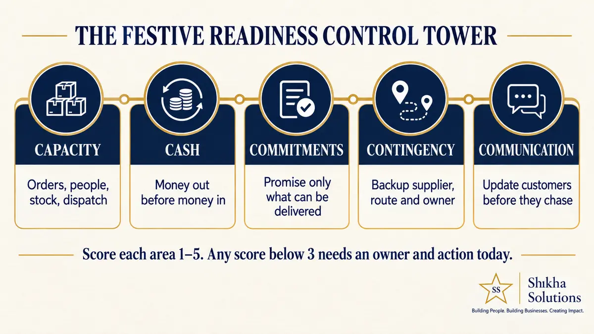

More festive orders help only when your stock, people, cash flow, fulfilment process and customer promises can handle them. Before increasing advertising or offering discounts, calculate your practical order capacity, working-capital requirement and recovery plan for delays. The objective is profitable, controlled growth—not maximum order volume.
What happened
Indian logistics companies are preparing for a more complex festive season as ecommerce, direct-to-consumer, quick-commerce and cross-border demand expands into smaller cities while customers expect faster, more visible deliveries. Firms are adding processing and storage capacity, hiring frontline workers, improving address accuracy and using data and AI to forecast demand and manage delivery exceptions. DTDC told Financial Express that cargo during key festive periods typically reaches about 30% above its monthly average. Other operators are building buffer capacity, alternative routes and stronger customer communication systems. This is the reported development; the business guidance below is Shikha Solutions’ interpretation for SME founders.
Why SME founders should pay attention
Festive demand is commonly viewed as a sales opportunity. Operationally, it is also a pressure test. Additional orders can require more inventory before customers pay, temporary employees who need training, higher packaging and delivery costs, faster coordination between sales and operations, and more customer queries, exchanges and returns.
A business can record its highest monthly sales and still experience weaker cash flow, lower margins and disappointed customers. The more useful question is not, “How many orders can we generate?” It is, “How many orders can we deliver profitably and reliably?”
This difference matters because customer expectations rise when fulfilment systems are under maximum pressure. A late delivery, inaccurate promise or poorly handled return can damage trust built over months.
What founders commonly misunderstand
Sales capacity is not operating capacity
Marketing may generate 500 orders. That does not mean purchasing, packing, dispatch, delivery and customer support can process 500 orders without delays or extra cost.
Revenue is not available cash
Stock, packaging, advertising, temporary staff and logistics may need to be paid before customer money becomes usable. A profitable order can still create a working-capital shortage.
More stock is not always safer
Too little inventory loses sales; too much traps cash after the festival. Demand scenarios, reorder points and supplier lead times matter more than a general instruction to “buy extra.”
A promise made by sales becomes work for operations
Discounts, delivery dates and exchange terms should be confirmed against operational reality. Sales and delivery teams need the same information and escalation rules.
The Shikha Solutions Festive Readiness Control Tower

1. Capacity
Establish the maximum orders your people, stock and dispatch process can handle daily without compromising quality. Measure orders processed per person, packing capacity, supplier replenishment time, support capacity and the first stage likely to overload.
2. Cash
Calculate how much money leaves before festive sales generate usable cash. Include inventory, marketing, staffing, packaging, freight, returns and marketplace deductions. Run three scenarios: expected demand, 20% lower demand and 30% higher demand.
3. Commitments
Define what the business can safely promise. Confirm delivery timelines, stock availability, discount authority, exchange conditions and escalation rules. Give sales and operations one shared source of truth.
4. Contingency
Identify likely failure points and assign alternatives in advance: a backup supplier, secondary courier, extra packing station, emergency approval limit or employee responsible for delayed orders. A contingency without a named owner is only an idea.
5. Communication
Prepare messages for confirmation, delays, address problems, dispatch and returns before demand peaks. Automation can send routine updates, but a person must own exceptions that require judgement or empathy.
Draw five columns on one sheet: Capacity, Cash, Commitments, Contingency and Communication. Score each from 1 to 5: 1 means unclear or unmanaged; 3 means a basic process exists; 5 means documented, measured, tested and backed up.
For every score below 3, write the specific risk, one action for this week, the employee responsible, the completion date and the number that will show improvement. Start with the weakness most likely to affect customers or cash.
Final thought
Festive growth should strengthen your business, not leave the founder managing exceptions all day. Prepared businesses do more than add stock or people: they create visibility, define ownership and agree which decisions can be made without waiting for the founder.
More demand is an opportunity. Your operating system determines whether it becomes profit, pressure or reputational damage.
Before increasing promotions, take Shikha Solutions’ free 15-question Business Health Check. It takes about three minutes and helps identify where sales, cash flow, operations, team capability or founder dependency needs attention.
Take the free Business Health Check →